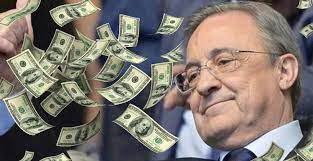
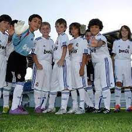

Contexto

El Real Madrid es un equipo de futbol de la ciudad de Madrid España que juega en varias competiciones como La Liga Española copas de europa, Copas de españa entre otras, este equipo es muy conocido por ser el club con mas champios leagues y ligas españolas entre otras esto lo hace ser un club con mucha aficion
Desarrollo
El club Real Madrid al ser un equipo triunfador no solo alegra a su aficion si no que consigue buen dinero y termina siendo un buen negocio ya que al ganar diferentes trofeos una y otra vez se vuelven un club grande y rico y con ese dinero lo invierten para mejorar cada temporada cada vez mas
Motivación
El Real Madrid no solo es un equipo ganador y con muchos trfeos tambien ayuda a motivar a los jovenes a hacer deporte y seguir sus sueños de ser jugador de futbol ya que al ser un club con mucha a ficion y al tener una cantera muy buena los jovenes aficionados se motivana aintentarlo

 Los viajes a Marte
Los viajes a Marte